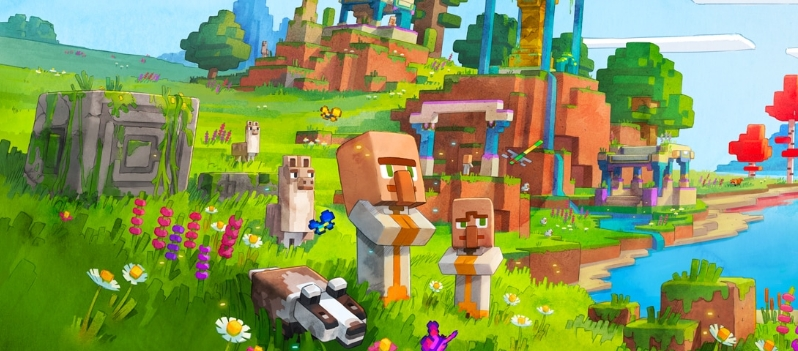
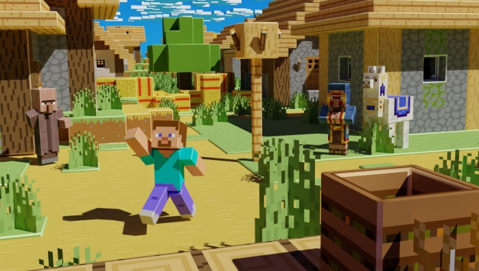

Overworld adalah dimensi pertama sekaligus tempat awal petualanganmu dimulai di Minecraft. Dunia ini sangat luas dan indah, menyajikan pemandangan alam yang beragam mulai dari hutan lebat, padang pasir yang gersang, pegunungan bersalju yang menjulang tinggi, hingga gua-gua bawah tanah terdalam yang menyimpan harta karun seperti besi dan berlian. Di siang hari, Overworld sangat damai dan dipenuhi hewan-hewan ramah yang bisa kamu ternakkan, namun kamu harus tetap waspada karena saat malam tiba atau ketika kamu masuk ke dalam kegelapan gua, monster seperti Zombie, Skeleton, dan Creeper akan keluar dan siap menantang kemampuan bertahan hidupmu.


Desa ini merupakan tempat tinggal bagi para Villager yang damai dan dijaga oleh Iron Golem yang kuat. Di sini, kamu bisa menjelajahi berbagai rumah unik, memanfaatkan lahan pertanian mereka untuk mencari makanan, serta melakukan barter atau perdagangan menggunakan Emerald untuk mendapatkan barang-barang langka.

Menara tinggi berbahan kayu gelap ini merupakan pos pertahanan bagi komplotan Pillager yang agresif. Tempat ini sangat menantang untuk ditaklukkan karena dipenuhi musuh bersenjata panah, namun jika berhasil mengalahkannya, kamu bisa menjarah peti pasokan mereka di puncak menara dan menyelamatkan tawanan yang terkurung.

Ruined Portal adalah sisa-sisa dari gerbang Nether Portal kuno yang telah rusak dan terbengkalai di berbagai sudut Overworld maupun Nether. Struktur ini mudah dikenali dari balok Obsidian hitam yang bercampur dengan Crying Obsidian yang bercahaya keunguan, serta dikelilingi oleh blok Netherrack merah. Di dekat gerbang ini, biasanya selalu ada sebuah peti harta karun yang berisi peralatan emas terpesona (enchanted) serta korek api (Flint and Steel) untuk membantumu menyusun kembali dan mengaktifkan kembali gerbang legendaris tersebut.
 Nether
Nether